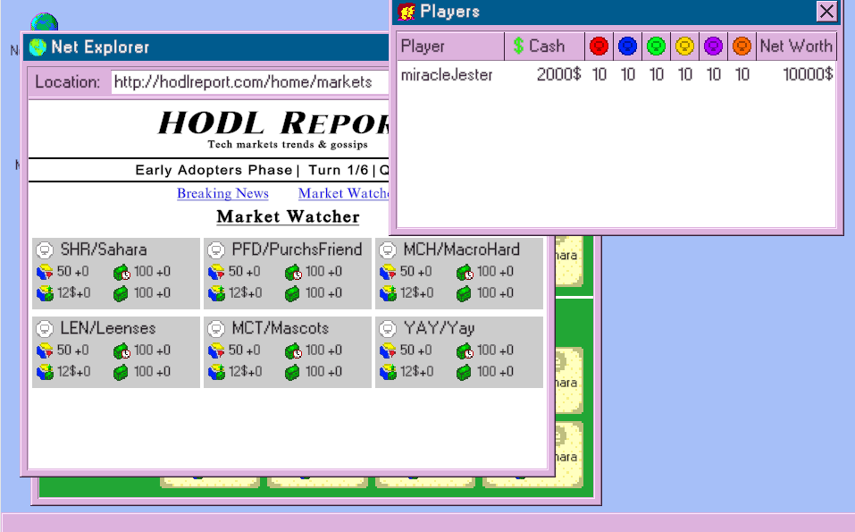

Net Trader 2000
A browser-playable trading card game built in Unity with AI-assisted development and AI-generated graphics.

Screenshots

About the Project
Net Trader 2000 is a trading card game compiled to HTML5, playable instantly in the browser with no download. Built in one month for Global Game Jam 2025 by a two-person team, the project is transparent about its use of AI assistance in both the development workflow and the creation of its graphic assets.
The game draws design inspiration from the board game Seven Wonders and is intended to continue development in the future. I contributed as programmer and designer, co-authoring the card mechanics and overall game structure alongside the technical implementation. The intended full experience was not complete by the deadline, but the design direction is solid enough that continued development remains on the table.
Technical Highlights
- AI-assisted development workflow integrated deliberately and disclosed transparently
- AI-generated graphic assets
Features
- Browser-playable card game with no download required
- Trading card game mechanics inspired by Seven Wonders
What I Learned
This was the first project where AI assistance was used deliberately in development. It was also a strong game design exercise: the Seven Wonders inspiration pushed the design toward more systems depth than a typical jam entry. Sadly we could not finish the intended experience in time, so what is playable is more of an UI exploration than a game. We intend to continue this game in the future.